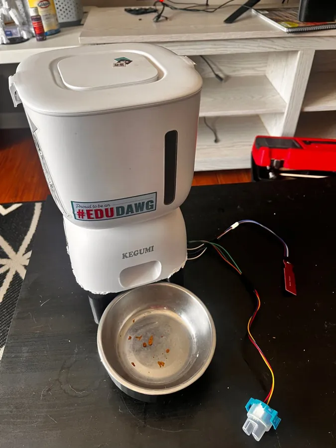
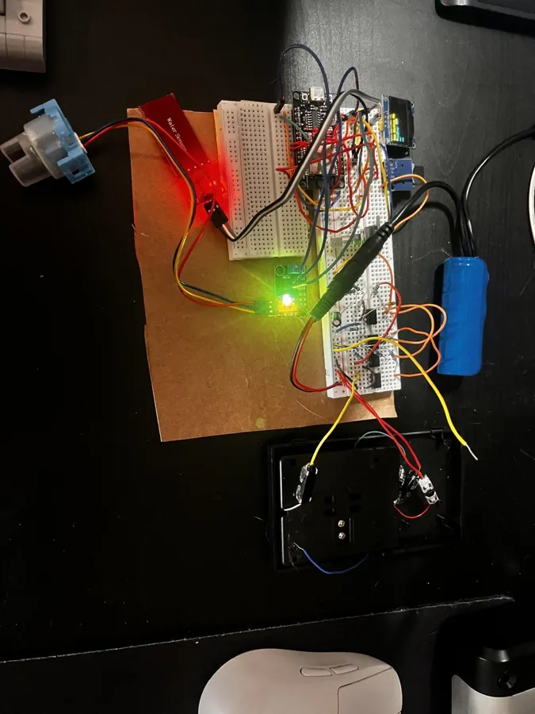
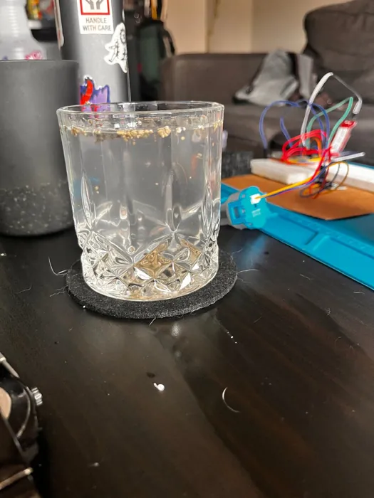
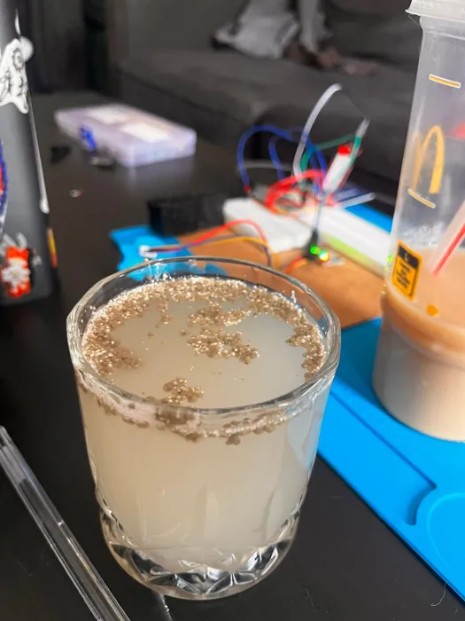
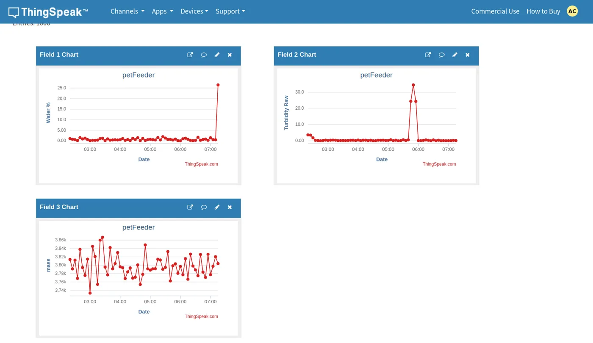

My last automatic feeder's smallest portion was too big, and it overfed my cat without my noticing. This one weighs every portion as it pours, stops at the target, and keeps an eye on her water fountain.

Feeding is a closed loop. Instead of running the motor for a fixed time and hoping, the ESP32 dispenses a little food, weighs the bowl, and repeats until it reaches the target:
Read the bowl. If it is already at the target, or the scale is overloaded, don't dispense.
Open the dispenser briefly, close it, and wait for the food to settle.
Stop when the bowl is within 5 g of the target. If several pulses add nothing, the hopper is stuck or empty, and the web app says so.
Feeding runs once a day at a set time, or whenever I press Feed now in the web app.
I started with force-sensitive resistors. They are cheap and easy to wire, but they couldn't come close to the accuracy a 40–100 g portion needs. So I switched to a 300 g load cell: four strain gauges glued to a machined aluminum bar and wired as a Wheatstone bridge. When the bar bends under weight, the bridge's output changes by a few thousandths of a volt.
That signal is far too small for the ESP32 to read directly, so it goes through an amplifier I designed:
Outputs 3.4 to 4.6 mV across the working range. It is very sensitive, which also means it is noisy.
The 9 V battery is split into ±4.5 V with a voltage divider and TL081 buffers, so the reference stays balanced as the current draw changes.
TL081 op-amps buffer the bridge, then a differential stage shifts and scales it up to the ADC's range.
An RC filter (100 Ω, 1 µF) cuts noise above 1.6 kHz before the ADC.
The ESP32 reads the voltage and converts it to grams with a linear transfer function.
Smooths each new reading against its running estimate, so a single noisy sample can't stop the dispenser early.
The 741 op-amps I tried first didn't work well, and I burned through a few. The TL081 has a wider operating range and fixed it.

Water level. The level sensor is a strip of exposed traces. As water covers more of the strip, its reading rises. The device shows it as a percentage (raw 1,200 is empty and 3,000 is full) and warns me before the fountain's pump can run dry.
Turbidity. The turbidity sensor shines light through the water and measures how much gets through. Clean water passes more light. I tuned the sensor board in clean water, then added kitty litter a little at a time, since litter is what usually ends up in a cat's water. The firmware sorts each reading into three states:


The water-level sensor came with almost no documentation, so I measured it myself. The ESP32 logged readings to its SD card while I raised the water in 2.5 mm steps, pressing a button to mark each new height.
I fit a 4th-order polynomial to all 835 readings and checked it with a 95% Scheffé confidence band. Readings outside that band would mean the sensor isn't behaving as expected.
The load cell was easier. I put eleven items on it that I had weighed on a separate, accurate scale, and measured the bridge output. Over the 0–110 g range I care about, it is close to a straight line:
The ESP32 hosts its own web page. From my phone or laptop I can see the water level and how clean it is, check the feeder's status, enter the portion size, and press Feed now. I reach it securely over a VPN, so I can feed her even when I'm out of town.
Every reading is also saved to the SD card and uploaded to ThingSpeak, a free IoT logging service. That way the history lasts longer than the device's local storage, and I can download it from anywhere.

It works, and I plan to keep using it for my cat and improving it:
Happy to walk through the sensors, the amplifier, or the calibration. Email is the fastest way to reach me.